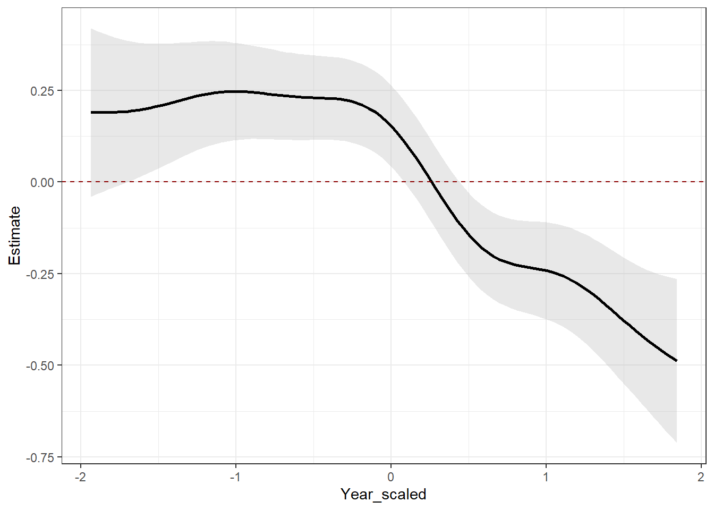
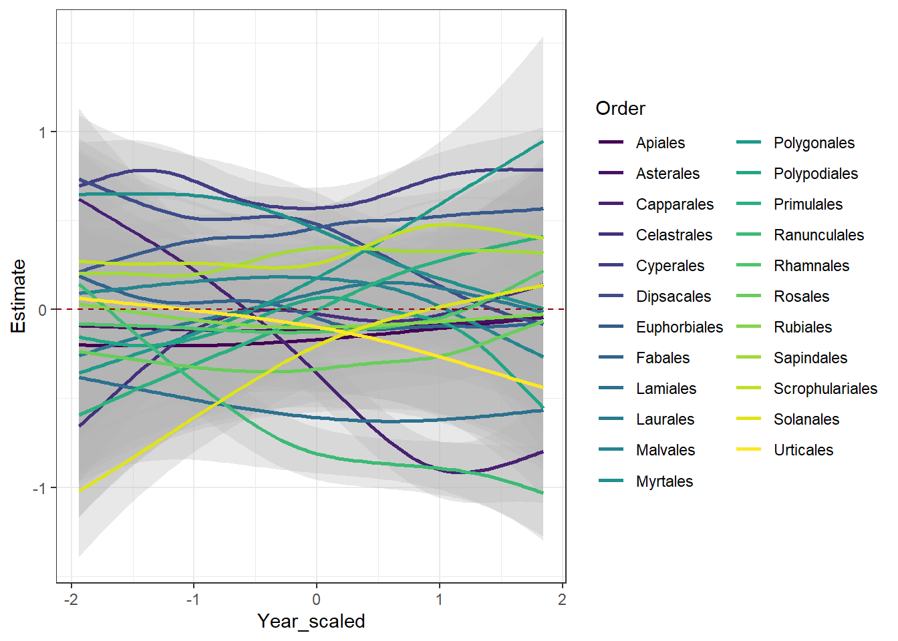

Hierarchical Generalized Additive Models
Assigned Reading:
- Pedersen, E. J., Miller, D. L., Simpson, G. L., & Ross, N. (2019). Hierarchical generalized additive models in ecology: an introduction with mgcv. PeerJ, 7, e6876.
- Lawton, D., Scarth, P., Deveson, E., Piou, C., Spessa, A., Waters, C., & Cease, A. J. (2022). Seeing the locust in the swarm: accounting for spatiotemporal hierarchy improves ecological models of insect populations. Ecography, 2022(2).
Overview
Invasive plants cause immense ecological and economic damage. For example, in forested lands, invasive grasses can change fire regimes, invasive shrubs can reduce native tree regeneration, and invasive trees can reduce timber production. Determining patterns in 1) invasive plant abundance increases/decreases over time and 2) spatial distribution across forested lands could help managers assess potential risks to their lands. For today’s lab, we’re going to be using hierarchical generalized additive models (HGAMs) to help us make these determinations–and add some theoretical flavor to them.
For the abundance increase/decrease over time issue, we will ask:
- Does functional group (e.g., growth habits such as graminoid, tree, shrub, etc.) or taxonomy (e.g., order) best explain invasive plant abundance changes?
For the spatial distribution issue, we will ask:
- How do abundance patterns differ by growth habit across space?
The first question will help us understand how to construct HGAMs from our hypotheses, appraise HGAM fits, and conduct model selection with HGAMs. Through the second question, we will learn to do spatial predictions (i.e., making predictive maps) with our model outputs.

Data description
The data you will be using is from the U.S. Forest Service’s “Forest Inventory and Analysis” (FIA) dataset. The FIA dataset is taken on public and private forested and timber lands throughout the U.S. on specific plots. The plots are revisited approximately every 4 - 5 years. One of the data collected at each plot is percent cover of various invasive plants. Here, I used the “rFIA” R package to extract invasive species cover data from the Eastern U.S. from 2001 - 2020. I also extracted growth habits and orders of each plant species from the USDA Plants Database. Below is a table with descriptions of columns in each dataset:
| Data File Name | Column Name | Description |
|---|---|---|
| FIA_Invasives_GrowthTaxonomy.csv | SCIENTIFIC_NAME | Genus and species |
| GrowthHabit1 | Primary growth habit | |
| GrowthHabit2 | Secondary growth habit, if applicable | |
| GrowthHabit3 | Tertiary growth habit, if applicable | |
| GrowthHabit_Number | Number of growth habits | |
| Order | Order of the species | |
| COMMON_NAME | Species’ common name | |
| FIA_Invasives_Cover.csv | Year | years 2001 - 2020 |
| pltID | Unique identifier for each FIA plot | |
| SCIENTIFIC_NAME | Genus and species | |
| COMMON_NAME | Species’ common name | |
| cover | areal cover of invasive species (acres) | |
| Longitude | decimal degrees longitude | |
| Latitude | decimal degrees latitude |
Let’s load the data and join the two files:
Data Exploration
On your own, familiarize yourself with the data. Below, you can see that we’re dealing with >100k rows and a few potential grouping variables.
## [1] 101979 16# How many unique values in each column?
fia %>%
summarize(across(everything(), ~ length(unique(.x))))## # A tibble: 1 × 16
## Year pltID SCIENTIFIC_NAME COMMON_NAME cover Longitude Latitude GrowthHabit1
## <int> <int> <int> <int> <int> <int> <int> <int>
## 1 21 29994 74 74 16069 29955 29916 6
## # ℹ 8 more variables: GrowthHabit2 <int>, GrowthHabit3 <int>,
## # GrowthHabit_Number <int>, Order <int>, cover_0.001 <int>,
## # Year_scaled <int>, Latitude_scaled <int>, Longitude_scaled <int># What's the max, min, mean, and median of the "cover" column?
fia %>%
summarize(Mean = mean(cover),
Median = median(cover),
Min = min(cover),
Max = max(cover))## # A tibble: 1 × 4
## Mean Median Min Max
## <dbl> <dbl> <dbl> <dbl>
## 1 0.118 0.05 0 1## [1] 1## **QUESTION**: Given there is only a single zero in the cover data, how does that affect the scope of our inference?
# Let's make a map! First, convert to an sf object for mapping
fia_sf <- st_as_sf(fia,
crs = st_crs(4326),
coords = c("Longitude", "Latitude"))
# Get a US states map
states <- map_data("state") # Map of US states
# # Make a map to show where the weather stations are:
# ggplot() +
# geom_polygon(data = states %>%
# filter(region %in% c("kentucky","tennessee", "mississippi", "texas",
# "alabama", "georgia", "florida", "oklahoma",
# "arkansas", "south carolina", "virginia",
# "louisiana", "north carolina", "maryland")
# ),
# mapping = aes(x = long, y = lat, group = group),
# fill = "white",
# color = "black") +
# geom_sf(data = fia_sf,
# shape = 15,
# alpha = 0.5,
# mapping = aes(color = Year)) +
# theme_bw() +
# theme(panel.grid.minor = element_blank(),
# axis.text.x = element_text(angle = 330),
# axis.text = element_text(size = 6,
# hjust = 0.1)) +
# xlab("Longitude") +
# ylab("Latitude")Sidenote: Should you ‘gam’ or ‘bam’?
This is a logistic issue relevant to using (H)GAMs with large datasets. The ‘gam’ function is the main mgcv way to run a (hierarchical) generalized additive model, but if you’re analyzing a lot of data (e.g., >100k rows), you may consider switching to the ‘bam’ function. The outputs are very similar, but there are some differences due to some shortcuts the ‘bam’ function uses behind the curtains. If you’re interested, read about that here and also here.
Also, to prove the difference in runtimes, check this out:
# # runtime for 'bam'
# system.time(
# bam(cover_0.001 ~
# te(Longitude_scaled, Latitude_scaled) +
# s(Year_scaled) +
# s(Year_scaled, GrowthHabit1, bs = "fs"),
# family = Gamma("log"),
# data = fia,
# discrete = TRUE,
# method = "fREML")
# )
#
# # runtime for 'gam'
# system.time(
# gam(cover_0.001 ~
# te(Longitude_scaled, Latitude_scaled) +
# s(Year_scaled) +
# s(Year_scaled, GrowthHabit1, bs = "fs"),
# family = Gamma("log"),
# data = fia,
# method = "REML")
# )Abundance changes: Growth habit or taxonomy?
“Random Slope”: Model GS
Let’s try our first HGAM: estimate a global function for our main covariate of interest (Year) plus a individual-level random slope for Year per growth habitat/order. We’ll also throw latitude and longitude into a tensor smooth to account for spatial autocorrelation.
On your own, investigate each model diagnostic call (commented out in the chunk below) and interpret. Look at the R help for more information, and ask Caleb if you have more questions.
# Create model GS using bam()
growth_modGS <-
bam(cover_0.001 ~
te(Longitude_scaled, Latitude_scaled) + # tensor smooth lets latitude/longitude 'interact'
s(Year_scaled) +
s(Year_scaled, GrowthHabit1, bs = "fs"),
family = Gamma("log"), # Why this link?!
data = fia,
discrete = TRUE,
method = "fREML") # need to use fREML for fast fitting.
# # Some basic model diagnostics
# summary(growth_modGS)
# gam.check(growth_modGS)
# gratia::appraise(growth_modGS)
order_modGS <-
bam(cover_0.001 ~
te(Longitude_scaled, Latitude_scaled) + # tensor smooth lets latitude/longitude 'interact'
s(Year_scaled) +
s(Year_scaled, Order, bs = "fs"),
family = Gamma("log"), # Why this link?!
data = fia,
discrete = TRUE,
method = "fREML") # need to use fREML for fast fitting.
# # Some basic model diagnostics
# summary(order_modGS)
# gam.check(order_modGS)
# gratia::appraise(order_modGS)Okay, so the models aren’t the greatest for a few reasons. On your own, check out the gratia::appraise calls that are commented out, and list some issues with these models.
“Group smoothers with differing wiggliness (no global smoother)”: Model I
Okay, now let’s create models for our other hypothesis (order or growth habit alone best explain changes in invasive species abundance, and abundance changes occur idiosyncratically based on growth habit/order). To do this, we’ll use model “I” per Pederson et al. (2019).
# Growth habit
growth_modI <-
bam(cover_0.001 ~
te(Longitude_scaled, Latitude_scaled) +
s(Year_scaled, by = GrowthHabit1) +
s(Year_scaled, bs = "re"), # Why include this??
family = Gamma("log"),
data = fia,
discrete = TRUE,
method = "fREML")
# Order
order_modI <-
bam(cover_0.001 ~
te(Longitude_scaled, Latitude_scaled) +
s(Year_scaled, by = Order) +
s(Year_scaled, bs = "re"),
family = Gamma("log"),
data = fia,
discrete = TRUE,
method = "fREML")On your own, run the model diagnostics and compare to diagnostics from Model I. Are there improvements, and if so, where do you see them? Should we consider increasing “k” for any of the smoothers?
Model selection
We learned from the Pedersen et al. (2019) paper that we can use AIC to compare HGAMs, which is awesome! But–model selection via AIC should not be our stopping point. In this section, we’re going to dip our toes into cross validation to compare the predictive power of HGAMs.
But first, let’s just see what AIC(c) has to say about our two HGAMs:
model.sel(list(growth_modGS = growth_modGS,
order_modGS = order_modGS,
growth_modI = growth_modI,
order_modI = order_modI))## Model selection table
## (Int) s(Yer_scl) s(Yer_scl,GH1,"fs") te(Lng_scl,Ltt_scl)
## order_modGS -2.116 + +
## growth_modGS -1.873 + + +
## order_modI -1.679 +
## growth_modI -1.644 +
## s(Yer_scl,Ord,"fs") s(Yer_scl,"re") s(Yer_scl,GH1) s(Yer_scl,Ord)
## order_modGS +
## growth_modGS
## order_modI + +
## growth_modI + +
## df logLik AICc delta weight
## order_modGS 98 125833.3 -251468.9 0.00 1
## growth_modGS 61 125463.2 -250803.0 665.93 0
## order_modI 130 125517.7 -250773.6 695.33 0
## growth_modI 76 124972.1 -249790.8 1678.15 0
## Models ranked by AICc(x)We have a very clear winner per AICc rankings: model GS.
Cross validation
Let’s check on the cross validation. for brevity’s sake, we’ll just look at the top two models from our model selection.
# Create training and testing data.frames
train_df <-
sample_n(fia %>% mutate(id = 1:n()),
ceiling(nrow(fia)/10)) # Using 10% of the data for training
test_df <-
anti_join(fia %>% mutate(id = 1:n()),
train_df, by = "id")
# train models
order_modGS_train <-
bam(cover_0.001 ~
te(Longitude_scaled, Latitude_scaled) +
s(Year_scaled) +
s(Year_scaled, Order, bs = "fs"),
family = Gamma("log"),
data = fia,
discrete = TRUE,
method = "fREML")
growth_modGS_train <-
bam(cover_0.001 ~
te(Longitude_scaled, Latitude_scaled) +
s(Year_scaled) +
s(Year_scaled, GrowthHabit1, bs = "fs"),
family = Gamma("log"),
data = fia,
discrete = TRUE,
method = "fREML")
# Root mean square error and mean absolute error
data.frame(Model = c("order_modGS", "growth_modGS"),
RMSE = c(rmse(order_modGS_train, test_df),
rmse(growth_modGS_train, test_df)),
MAE = c(mae(order_modGS_train, test_df),
mae(growth_modGS_train, test_df)))## Model RMSE MAE
## 1 order_modGS 2.451044 2.394720
## 2 growth_modGS 2.443929 2.390163Oof! Looks like both our quick and dirty cross-validation tests show the models have negligible differences in predictive ability. In fact, the growth model is (very) slightly better. Just goes to show that we need to assess models from multiple angles.
Simple predictions
Now, let’s plot some predictions.
# Luckily, the gratia package has some nice functions for creating customized model prediction plots:
# See the exact names of the smooths in the model object
smooths(growth_modGS)## [1] "te(Longitude_scaled,Latitude_scaled)"
## [2] "s(Year_scaled)"
## [3] "s(Year_scaled,GrowthHabit1)"# Save smooth estimates.
sm <- smooth_estimates(growth_modGS)
# Plot the global "s(Year_scaled)" estimate
sm %>%
filter(.smooth == "s(Year_scaled)") |>
add_confint(coverage = 0.80) |> # 80% confidence intervals
ggplot(aes(y = .estimate,
x = Year_scaled)) +
geom_ribbon(aes(ymin = .lower_ci,
ymax = .upper_ci),
alpha = 0.3,
fill = "gray70") +
geom_line(linewidth = 1) +
geom_hline(data = data.frame(yintercept = 0),
mapping = aes(yintercept = yintercept),
linetype = 2,
color = "darkred") + # Adding to make it clear where confidence intervals encompass zero.
theme_bw() +
ylab("Estimate")
# Plot the factor smooths for each growth habit
sm %>%
filter(.smooth == "s(Year_scaled,GrowthHabit1)") |>
add_confint(coverage = 0.80) |> # 80% confidence intervals
ggplot(aes(y = .estimate,
x = Year_scaled,
group = GrowthHabit1)) +
geom_ribbon(aes(ymin = .lower_ci,
ymax = .upper_ci),
alpha = 0.3,
fill = "gray70") +
scale_color_viridis_d() +
geom_line(linewidth = 1,
mapping = aes(color = GrowthHabit1)) +
geom_hline(data = data.frame(yintercept = 0),
mapping = aes(yintercept = yintercept),
linetype = 2,
color = "darkred") + # Adding to make it clear where confidence intervals encompass zero.
theme_bw() +
facet_wrap(~GrowthHabit1) +
ylab("Estimate")
On your own, interpret the prediction plots. How does the global smoother ( “s(Year_scaled)” ) estimate compare to the individual factor smooths ( “s(Year_scaled, GrowthHabit1)” )? What does it mean for the estimate to be above the zero line, encompassing the zero line, and below the zero line?